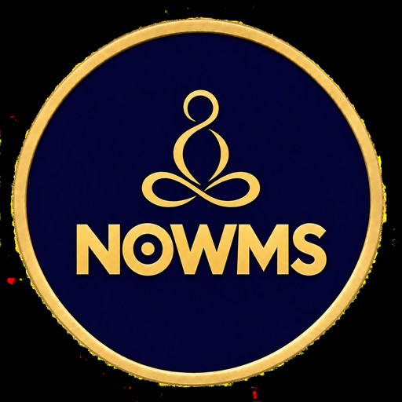

NOWMS
나우코인 발행 안내
NOW Mind Search · 솔라나 메인넷 발행 완료

발행 현황
- 발행일
- 네트워크
- 솔라나 메인넷
- 고정 발행량
- 100,000,000 NOWMS
- 추가 발행 권한
- 영구 폐기 완료
AET9mWypLrfyQqjt9jQ13CzDUnFC1oGu7bTz8UJmVuES
NOW 코인 적립
NOW 마음챙김에서 수행과 일상 실천을 하면 적립 코인 NOW를 모을 수 있어요.
Google 계정으로 로그인하면 적립 내역이 Firebase의 Cloud Firestore에 계정별로 자동 저장돼요.
NOW 마음챙김 적립 코인 교환 계획
마음챙김 활동으로 적립한 NOW를 향후 NOWMS로 교환하는 기능을 계획하고 있어요. 교환은 아직 시작되지 않았으며, 아래는 현재 계획안이에요.
| 단계 | 교환용 배정 (NOWMS) | 1 NOWMS에 필요한 적립 NOW |
|---|---|---|
| 1차 | 20,000,000 | 1개 |
| 2차 | 20,000,000 | 10개 |
| 3차 | 15,000,000 | 100개 |
| 4차 | 15,000,000 | 1,000개 |
| 5차 | 10,000,000 | 10,000개 |
회차별 교환 시작 기준
1차부터 5차까지, 각 회차의 누적 교환 신청량을 NOWMS로 환산한 수량이 해당 회차의 배정 물량을 넘으면 그 회차의 코인 교환을 진행할 계획입니다.
예를 들어 2차에는 적립 NOW 10개로 NOWMS 1개를 받는 계획이에요. 5차는 교환용 마지막 1,000만 NOWMS를 장기간에 걸쳐 배정하는 구간이에요.
연 120,000 NOW 기준 교환 가능 인원
1인당 연간 적립 NOW 120,000개를 각 차수의 교환 비율로 전부 교환한다고 가정한 예시입니다.
| 단계 | 1인당 교환량 (NOWMS) | 교환 가능 인원 | 남는 물량 (NOWMS) |
|---|---|---|---|
| 1차 | 120,000 | 166 | 80,000 |
| 2차 | 12,000 | 1,666 | 8,000 |
| 3차 | 1,200 | 12,500 | 0 |
| 4차 | 120 | 125,000 | 0 |
| 5차 | 12 | 833,333 | 4 |
1차에서는 166명이 120,000 NOWMS씩 교환하면 19,920,000 NOWMS를 사용하고 80,000 NOWMS가 남습니다.
교환 수수료와 계정 보증금
아래는 NOWMS를 지급할 때 드는 솔라나 비용의 예시입니다. 이용자에게 부과할 교환 수수료와 비용 부담 주체는 아직 정해지지 않았습니다.
- 기본 전송 수수료는 한 건당 0.000005 SOL입니다. 1명당 한 건, 서명 1개, 우선순위 수수료 0 SOL로 계산했습니다.
- 받는 지갑에 NOWMS 보관 계정이 없으면 처음에 0.00148844 SOL이 보증금으로 추가됩니다. 계정을 유지하면 다음 교환부터 기본 전송 수수료만 듭니다.
한 번 교환할 때 · 인원별 비용
| 교환 인원 | 기존 계정 | 새 계정 |
|---|---|---|
| 1 | 0.000005 SOL≈ ₩0.49 | 0.00149344 SOL≈ ₩147.7 |
| 10 | 0.00005 SOL≈ ₩4.95 | 0.0149344 SOL≈ ₩1,477.01 |
| 100 | 0.0005 SOL≈ ₩49.45 | 0.149344 SOL≈ ₩14,770.12 |
| 1,000 | 0.005 SOL≈ ₩494.5 | 1.49344 SOL≈ ₩147,701.22 |
| 10,000 | 0.05 SOL≈ ₩4,945 | 14.9344 SOL≈ ₩1,477,012.16 |
| 100,000 | 0.5 SOL≈ ₩49,450 | 149.344 SOL≈ ₩14,770,121.6 |
| 1,000,000 | 5 SOL≈ ₩494,500 | 1,493.44 SOL≈ ₩147,701,216 |
각 열은 모든 수령자가 같은 조건인 경우를 보여줍니다. 기존 계정과 새 계정이 섞이면 전체 인원에 전송 수수료를, 새 계정이 필요한 인원에만 보증금을 더합니다.
1차~5차 교환 비용
매 회차 같은 인원이 같은 지갑으로 한 번씩 받는 경우입니다. 첫 교환 때 계정이 없는 지갑에는 1차에만 보증금이 듭니다. 2~5차에 처음 참여하는 지갑에도 보증금이 필요합니다.
처음부터 기존 계정 사용
| 회차 | 회차별 비용 | 누적 비용 |
|---|---|---|
| 1차 | 0.000005 SOL≈ ₩0.49 | 0.000005 SOL≈ ₩0.49 |
| 2차 | 0.000005 SOL≈ ₩0.49 | 0.00001 SOL≈ ₩0.99 |
| 3차 | 0.000005 SOL≈ ₩0.49 | 0.000015 SOL≈ ₩1.48 |
| 4차 | 0.000005 SOL≈ ₩0.49 | 0.00002 SOL≈ ₩1.98 |
| 5차 | 0.000005 SOL≈ ₩0.49 | 0.000025 SOL≈ ₩2.47 |
첫 교환 때 새 계정 생성
| 회차 | 회차별 비용 | 누적 비용 |
|---|---|---|
| 1차 | 0.00149344 SOL≈ ₩147.7 | 0.00149344 SOL≈ ₩147.7 |
| 2차 | 0.000005 SOL≈ ₩0.49 | 0.00149844 SOL≈ ₩148.2 |
| 3차 | 0.000005 SOL≈ ₩0.49 | 0.00150344 SOL≈ ₩148.69 |
| 4차 | 0.000005 SOL≈ ₩0.49 | 0.00150844 SOL≈ ₩149.18 |
| 5차 | 0.000005 SOL≈ ₩0.49 | 0.00151344 SOL≈ ₩149.68 |
2026년 11월 15일 확인 기준. 원화는 1 SOL = 98,900원으로 환산한 참고값입니다. 실제 비용은 교환 시점의 SOL 시세, 우선순위 수수료, 계정 생성 조건에 따라 달라질 수 있습니다.
앞으로의 일정
- 교환 연동 검토. 운영 비용, 보안과 암호화, 관련 법률을 검토한 뒤 연동을 추진할 계획이에요.
- 교환 개시 공지. 시작일이 정해지면 단계별 교환 비율, 남은 수량, 교환 방법을 안내할 예정이에요.
- 사용처와 거래소 상장. 추후 결정되는 내용을 홈페이지에 안내할 예정이에요.